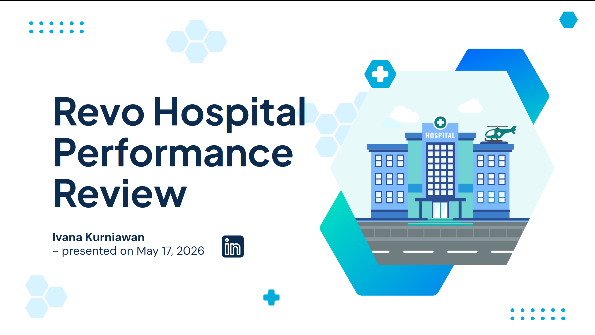
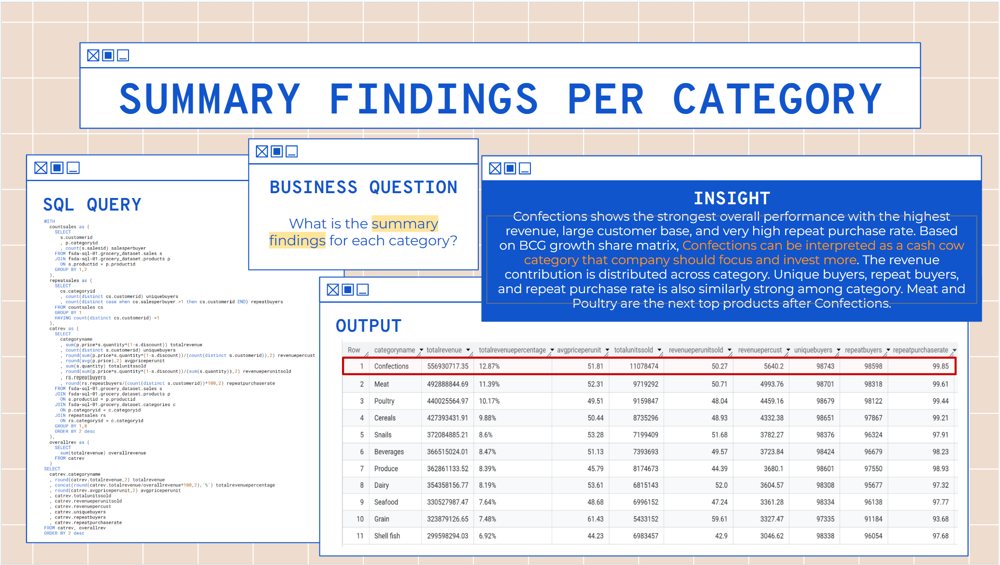

Other Projects
Analytics and Consulting Projects

Business Analysis and Process Improvement
Identified profitability drivers and recommended process improvements that increased profitability by 25%.
View Case Study →

Hospital Performance Review
Built an executive Tableau dashboard that analyzes hospital revenue, admissions, and operational efficiency across branches and departments, enabling leadership to identify revenue drivers and prioritize performance improvement initiatives.
View Case Study →

Retail Sales Performance Analysis
Analyzed grocery transaction data using SQL and BigQuery to identify revenue drivers, evaluate pricing effectiveness, and uncover customer purchasing patterns across product categories.
View Case Study →